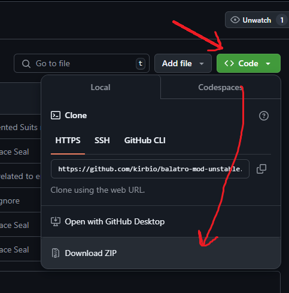
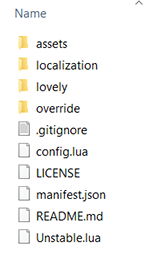

Back to main page
How to Install
(For both UnStable and UnStableEX)
1. If you don't have Steamodded, please make sure to install that first.
Follow the guide here
2. On the mod's github page, click the green "Code" button, and selects "Download ZIP" from the drop down.

3. Save it onto your computer and extract the file.
4. Navigate to your mod folder (same as Steamodded)
Windows: %AppData%/Balatro/Mods
Mac: ~/Library/Application Support/Balatro/Mods
Linux (WINE/Proton): ~/.local/share/Steam/steamapps/compatdata/2379780/pfx/drive_c/users/steamuser/AppData/Roaming/Balatro/Mods
5. Inside the extracted zip file, you should find a directory named "UnStable-main" or "UnStableEX-main".
Move this interior folder into your Mods folder. Make sure that the inside of the folder looks similar to this.

If it only has a single folder, go inside that folder and take everything in there out by 1 step.
6. It is done, please enjoy!
Note: It is highly recommended to have a separate profile for playing modded,
so you can keep the vanilla save file intact!